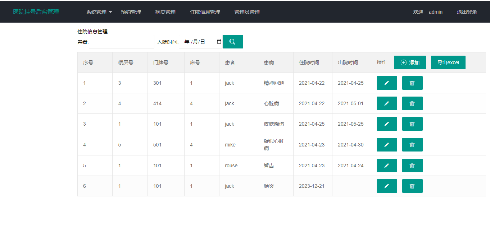
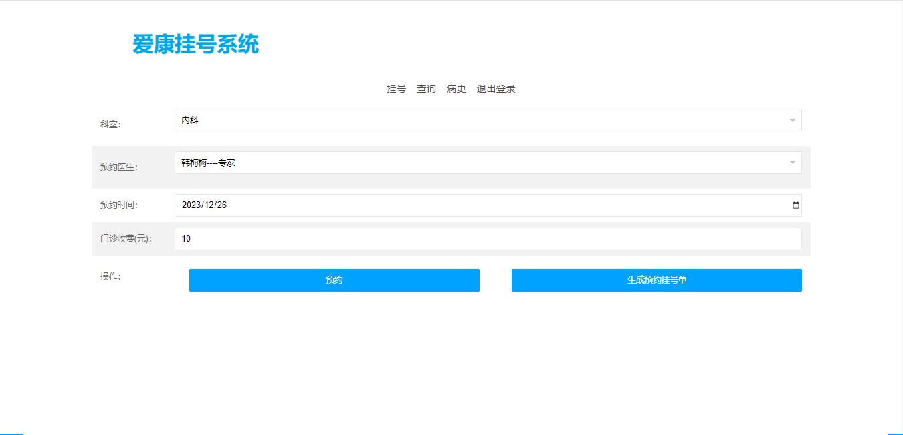

医院挂号系统使用 SpringBoot+Mybatis 进行开发，系统分为管理员、医生和患者三种角色，系统带有前台可浏览医院的基本情况，主要实现的预约挂号功能在后台。
管理员主要功能如下：
医生：
患者：
用 idea 打开项目
在 idea 中配置 jdk 环境
配置 maven 环境并下载依赖
新建数据库，导入数据库文件
在 application.yml 文件中将数据库账号密码改成自己本地的
启动运行，浏览器输入 http://localhost:8080/hospital 进行访问，管理员账号密码：admin/123456，医生账号密码：hanmeimei/123456，患者账号密码：jack/123456

